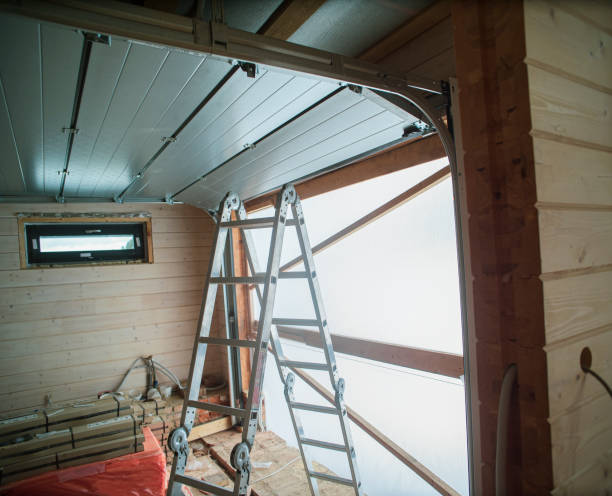
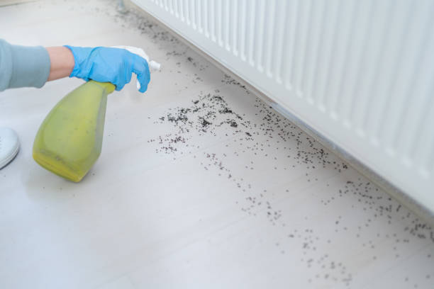

Dallas Texas
info@asapstatewideseptic.pro
Dallas Texas
info@asapstatewideseptic.pro

Ensure a properly functioning septic system with expert services from our trusted team in Dallas Texas . Fast, affordable, and reliable septic tank cleaning and repair solutions for your home.
Click Here To Call Us (877) 848-1711When it comes to maintaining your home or business’s septic system, you need a trusted, experienced provider. At , we specialize in comprehensive septic services across Dallas Texas ensuring that your system is in top condition year-round. Whether you need septic tank pumping, repairs, inspections, or full system installation, our team is dedicated to providing efficient, reliable, and affordable solutions.
Our septic experts in Dallas Texas understand the unique needs of local properties, offering tailored services to prevent costly repairs down the road. Regular septic maintenance is crucial for extending the life of your system and preventing unpleasant backups or costly failures. That's why we provide thorough inspections, cleaning, and pumping, all designed to keep your septic system running smoothly.
We pride ourselves on using state-of-the-art equipment and advanced techniques to deliver quick and thorough service. With , you can count on professionalism, transparency, and a commitment to ensuring your septic system is functioning at its best.
Why Choose Us in Dallas Texas ?
Expert septic system pumping and repairs
Fast, reliable service with minimal disruption
Affordable pricing for residential and commercial properties
Fully licensed and insured professionals
For septic services you can trust in Dallas Texas call today!
Residential & commercial septic service
Quality services at affordable prices
Immediate 24/ 7 emergency services


When it comes to septic tank installation in Dallas Texas trust the experts to ensure your system is installed professionally and efficiently. At septic service, we specialize in providing top-notch septic tank services tailored to your needs. Our experienced team uses state-of-the-art equipment to offer reliable septic system installations that comply with local regulations and ensure long-term functionality.
Septic tank installation is a crucial part of maintaining a healthy home or business environment. With years of experience in the industry, we understand the importance of a well-designed and properly installed septic system. Our team conducts thorough site assessments to determine the best location for your septic tank, ensuring optimal performance and minimizing potential issues.
We offer a wide range of septic tank sizes and systems suitable for residential and commercial properties across Dallas Texas . Whether you're building a new home or upgrading your existing septic system, we ensure the installation is handled with precision and care. Our skilled technicians take the time to explain your options, helping you make an informed decision.
At septic service, we prioritize customer satisfaction and strive to deliver prompt, professional septic tank installation services in Dallas Texas and surrounding areas. Contact us today for expert septic services that guarantee peace of mind.
Residential & commercial septic service
Quality services at affordable prices
Immediate 24/ 7 emergency services
When septic emergencies arise, prompt action is crucial for commercial operations. At septic service, we offer emergency septic services that are available 24/7 for businesses in Dallas Texas . Our fast response team is equipped to handle any septic crisis, minimizing downtime and damage to your facility. With our expertise and commitment to excellence, you can trust us to restore functionality quickly and effectively. Choose our emergency services to ensure your business stays up and running during unexpected septic issues.

Regular inspections are vital for preventing costly repairs in commercial septic systems. At septic service, we provide thorough septic system inspection services for commercial buildings, identifying potential issues before they escalate. Our skilled inspectors evaluate every aspect of your system to ensure optimal performance and compliance with local regulations. By selecting our inspection services, you're safeguarding your investments and ensuring a reliable waste management solution for your business.

Regular inspections are essential for the health and functionality of commercial septic systems. At septic service, we provide comprehensive septic system inspections tailored to the needs of commercial buildings . Our experienced inspectors assess every aspect of your system, ensuring it operates smoothly and complies with local regulations.
We use advanced diagnostic tools to identify potential issues and provide detailed reports that outline the condition of your system. Our inspections help you take proactive steps to address minor issues before they develop into costly repairs, ensuring longevity and compliance.
Partnering with us means choosing a team committed to excellence and transparency. We explain our findings and recommendations clearly, enabling you to make informed decisions about your septic system's health and functionality.

As a business owner, effective waste management is crucial to your operations. septic service specializes in sewage treatment systems designed to meet the unique requirements of businesses . Our systems are engineered to handle varying capacities and waste types while adhering to all local and federal regulations.
We work with you to assess your needs and design a sewage treatment system that guarantees efficiency and compliance. Our expertise spans industrial, commercial, and agricultural sectors, making us a trusted partner for any business requiring a reliable solution.
Choosing septic service for your sewage treatment needs means investing in technology and innovation. We are committed to providing systems that maximize performance while minimizing environmental impact.

Locating a septic tank is essential for maintenance and repairs. At septic service, we offer professional septic tank location services to help you pinpoint your system accurately. Our team uses advanced detection equipment and techniques to locate tanks efficiently, minimizing disruption to your property. Understanding the importance of timely service, we strive to provide accurate assessments quickly. Trust our experienced professionals to help you manage your septic system with ease.
Offensive odors from your septic system can be problematic and disruptive. Our septic tank odor control solutions focus on identifying and eliminating the sources of odors, ensuring a pleasant environment for your home or business.
We employ a combination of inspection and treatment options tailored to address your specific issues effectively. Trust our experienced team to help you maintain a fresh atmosphere while keeping your septic system functional.

Unpleasant odors from your septic system can be more than just a nuisance; they can indicate underlying issues. At septic service, we specialize in septic tank odor control solutions designed to eliminate foul smells and address the core issues causing the problems.
Our team conducts thorough assessments to identify the source of odors, whether it's a build-up of solids, improper ventilation, or other issues. We provide practical solutions tailored to your specific situation, ensuring that odors are mitigated effectively.
Choosing septic service for odor control means selecting a partner that understands the importance of a clean and pleasant environment. We take pride in our customer service, working to ensure your home or business maintains a fresh atmosphere while safeguarding your septic system.

Aerobic septic systems present unique benefits, especially for areas with high water tables. At septic service, we specialize in the installation and repair of aerobic septic systems, ensuring your waste is treated efficiently and effectively. Our knowledgeable team designs and installs systems tailored to your property’s specific needs and regulatory requirements. We also provide maintenance and repair services, ensuring your aerobic system remains in optimal condition. Choose us for your aerobic septic solutions and invest in a sustainable waste treatment system that works for you.

For commercial kitchens and food service businesses, grease traps are essential for preventing clogs and backups. At septic service, we offer professional grease trap cleaning and maintenance to ensure compliance and efficiency. Our team is trained in the best practices for grease trap servicing, providing thorough cleaning that minimizes odors and prolongs the life of your system. By choosing our services, you are protecting your business from plumbing issues and maintaining a sanitary environment for your operations.
Years Experience
Expert Technicians
Satisfied Clients
Compleate Projects
When it comes to septic services in Dallas Texas ASAP State Wide Septic is the name you can trust. We offer fast, reliable, and affordable solutions for all your septic needs, whether it’s routine maintenance, repairs, or installations. Our team of licensed professionals is committed to providing high-quality service, ensuring that your septic system operates smoothly and efficiently year-round.
We understand the inconvenience and potential hazards a malfunctioning septic system can cause. That’s why we pride ourselves on our swift response times, ensuring that your issues are addressed before they become major problems. Our team uses advanced tools and techniques to diagnose and resolve any septic system issue, minimizing disruption to your home or business.
With years of experience serving Dallas Texas ASAP State Wide Septic has built a reputation for exceptional service. Our attention to detail, professional expertise, and customer-first approach set us apart from the competition. We believe in transparency, offering clear and upfront pricing with no hidden fees, so you always know what to expect.
Whether you’re in need of septic tank pumping, repairs, or inspections, ASAP State Wide Septic is here to provide the best service in Dallas Texas . Choose us for reliable, expert solutions to keep your septic system running smoothly, and experience the peace of mind that comes with working with the top-rated septic company in the area.
In today's world, ensuring your home has a properly functioning septic system is crucial for maintaining hygiene and protecting your health. At septic service, we specialize in comprehensive residential septic services tailored to meet your specific needs. With years of experience serving the Dallas Texas community, we understand the intricacies of local regulations and soil types, ensuring efficient and effective septic system solutions.
Our residential services include septic tank installation, repair, pumping, cleaning, and routine maintenance. We utilize advanced technology and proven methods to monitor and maintain your septic system, which can prolong its lifespan and prevent costly emergencies. Choosing us means opting for a reliable partner that prioritizes your home's sanitation and your peace of mind.
We pride ourselves on our commitment to customer satisfaction. Our professional team is equipped to handle emergencies, and we offer 24/7 service because we understand septic issues don't adhere to a schedule. Our transparent pricing and thorough inspections ensure that you fully understand your system's condition and the required services. Trust septic service for all your residential septic service needs .
A malfunctioning septic tank can be a major inconvenience, potentially leading to costly damages. At septic service, we offer expert septic tank repair services aimed at quickly identifying and resolving issues. Our seasoned technicians utilize state-of-the-art technology and diagnostic tools to pinpoint problems and provide effective solutions. We pride ourselves on our prompt service and customer-focused approach, ensuring that you receive the best repair options available. Trust us to restore your septic system to optimal performance and prevent future complications.
Is your septic tank showing signs of trouble? At septic service, we specialize in septic tank repair services to keep your system running smoothly. Our experienced technicians are trained to diagnose common septic tank issues such as leaks, blockages, and improper drainage. With a detailed inspection and assessment, we identify the root cause of the problem and offer tailored solutions that restore function quickly and effectively.
Choosing us for your septic tank repair means you are opting for professionalism and reliability. We utilize state-of-the-art tools and techniques to perform repairs promptly, minimizing disruption to your daily life. Our team is fully licensed and insured, giving you peace of mind that you are working with qualified professionals in Dallas Texas .
Additionally, our commitment to customer satisfaction shines through in our transparent pricing and excellent communication throughout the repair process. We explain what needs to be done and why, ensuring you make informed decisions about your septic system. Trust septic service for effective and reliable septic tank repair services in Dallas Texas .
The health of your septic system largely depends on regular cleaning and maintenance, and our services in Dallas Texas are designed to extend the lifespan of your system while preventing harmful backups. We provide comprehensive cleaning solutions that include jetting, descaling, and preventive maintenance checks to keep your system functioning optimally.
Our trained professionals use the right techniques tailored to your specific system's needs. Ensuring your septic tank is clean is not just about good practice, it’s about safeguarding your home and family’s health. With our unwavering commitment to customer satisfaction, we guarantee that your system is treated with utmost care and professionalism.
Regular septic system inspections are crucial for early detection of potential issues that can spiral into costly repairs if not addressed promptly. Our septic system inspection services in Dallas Texas are thorough and meticulous, employing cutting-edge technology to evaluate your system’s health.
Why choose us? Our team pays attention to every detail during inspections—including tank conditions, drain field integrity, and baffle health. This allows us to provide comprehensive reports and recommendations that are easy to understand. Safe, reliable, and efficient services are what we aim to deliver, helping to prolong the life of your septic system.
When repairs are no longer a viable option, a septic tank replacement is necessary for maintaining a healthy drainage system. Our septic tank replacement services in Dallas Texas offer you a seamless transition from old to new. We guide you through the entire process, assisting with selecting the right size and type of tank that complies with local regulations and meets your home’s specific needs.
We strive to minimize disruption during the replacement process and ensure the installation is done right the first time. Our commitment to quality workmanship means that you will enjoy years of reliable service from your new septic system. Trust in our expertise to deliver a smooth and stress-free experience.
If you experience slow drains or frequent backups, your septic lines may be compromised. At septic service, we specialize in septic line repair services addressing common issues such as leaks, clogs, or deterioration.
Our skilled technicians utilize cutting-edge technology to diagnose and repair line issues promptly and effectively. We emphasize minimizing disruptions to your property while providing lasting solutions. Our dedication to efficient and safe repairs sets us apart as the trusted choice for septic line repair . Ensure the health of your septic system and the integrity of your property by choosing septic service.
If you’re experiencing septic system issues but can’t pinpoint the cause, our septic system troubleshooting services can help. Our team of experienced professionals knows how to diagnose complex problems through detailed examinations and assessments to get your system back on track.
We understand the nuances behind septic systems, which allows us to offer tailored solutions to resolve your troubles effectively. Our proactive approach ensures minimal disruption and optimal results. By choosing our troubleshooting services, you partner with a team that emphasizes transparency and communication throughout the process.
A properly functioning septic pump is crucial for moving wastewater efficiently from your home to the septic tank. At septic service, we specialize in septic system pump installation services providing high-quality pumps designed to meet the specific needs of your household.
Our experienced team works diligently to select and install the right pump for your system's requirements, ensuring optimal performance and longevity. We also educate our clients on routine maintenance to keep the pump running smoothly, highlighting our commitment to customer service and satisfaction. Choose septic service for your septic system pump installation and experience efficient waste management at its best.
Septic backup can be a nightmare for homeowners. At septic service, we provide specialized services focused on septic backup prevention and effective solutions in Dallas Texas . Our team is dedicated to educating homeowners on proper system usage and maintenance to avoid frustrating backups.
We offer comprehensive inspections to identify potential risks and provide tailored maintenance plans. In case of emergencies, our rapid response team can quickly address backups and resolve issues to prevent further damage. Ultimately, our commitment to excellence and customer satisfaction sets us apart as the leading provider of septic backup prevention solutions .
Managing a commercial property requires a reliable and effective septic system. At septic service, we offer comprehensive commercial septic services tailored to meet the specific needs of businesses and properties of all sizes.
Whether you need septic tank installation, pumping, or maintenance, our experienced team of professionals ensures your system runs smoothly and complies with all local regulations. We understand that a fully operational septic system is critical for maintaining a positive reputation and operational efficiency, and we are committed to delivering reliable solutions that minimize downtime and disruption for your business.
Installing a septic system for a commercial property requires expertise and compliance with local regulations. At septic service, we specialize in commercial septic system installations that cater to businesses of all sizes. Our team conducts in-depth assessments of your property to design a system that meets your specific needs and adheres to local codes. With our commitment to quality and efficiency, we guarantee a seamless installation process that supports your business operations effectively.
Regular septic tank pumping is vital for commercial properties to prevent backups and ensure a smooth operation. Our commercial septic tank pumping services in Dallas Texas are designed for businesses seeking prompt and reliable waste management solutions. We offer expertly executed pumping services that minimize disturbances to your daily operations.
Our technicians are prompt, professional, and equipped with the latest tools to effectively pump and maintain your septic tank. Choose us for on-time and efficient service that adheres to local regulations and industry standards, ensuring your business remains compliant and operational.
Managing waste effectively is crucial for food service and hospitality businesses. At septic service, we offer specialized grease trap and commercial waste removal services designed to keep your operations compliant and sanitary. Our experienced technicians are trained in the best practices for grease trap cleaning and removal, ensuring your systems perform optimally. By choosing us, you benefit from our commitment to customer satisfaction and compliance with health regulations, safeguarding your business from waste-related issues.
For businesses such as restaurants and food processing facilities, grease traps and waste removal are vital to prevent sewer backups and maintain compliance with health regulations. At septic service, we specialize in grease trap and commercial waste removal services tailored to your industry’s needs .
Our team provides routine cleaning and maintenance of grease traps to ensure they operate efficiently and adhere to local codes. Proper grease trap management prevents buildup and clogs, which can lead to costly fines and system failures. We utilize environmentally friendly methods to remove waste, guaranteeing safe disposal that complies with all regulations.
With our professional approach, you can trust septic service to handle your grease trap and waste removal needs with precision. We prioritize promptness and reliability, enabling you to focus on running your business without worrying about waste management issues.
Restaurants and hotels require reliable septic systems to ensure their operations run smoothly. At septic service, we specialize in septic system repair for restaurants and hotels in Dallas Texas tackling issues that could disrupt your business.
Our experienced technicians promptly identify and resolve septic issues using the best practices in the industry. We understand the urgency of these repairs and prioritize quick response times to avoid interruptions to your operations. With our expertise, septic service ensures your septic system remains a dependable asset for your business.
Large commercial properties require robust and efficient septic solutions. At septic service, we specialize in high-capacity septic systems that suit large buildings and industrial applications. Our team designs, installs, and maintains systems that provide reliable waste management for your operations. With our extensive experience and adherence to regulations, we ensure every system we install meets the highest standards. Choose us to handle your high-capacity needs with professionalism and expertise.
Navigating the complexities of septic system compliance can be daunting for business owners. Our services in Dallas Texas focus on ensuring that your commercial property meets all local health and safety regulations. We conduct thorough inspections and provide recommendations to bring your system up to standard.
We keep abreast of local codes and compliance requirements, ensuring you remain ahead of any regulations that might impact your business. Trust our expertise to help you maintain a compliant and functional septic system, safeguarding your investments.
When it comes to maintaining your septic system, regular pumping and cleaning are essential for its long-term efficiency and avoiding costly repairs. At septic service, we offer expert septic tank pumping and cleaning services across Dallas Texas ensuring that your system remains in top condition, so you don't have to worry about unexpected backups or unpleasant odors.
Our skilled technicians are equipped with the latest tools and technology to provide thorough pumping and cleaning services for residential and commercial properties. We adhere to industry best practices to ensure that your septic tank is emptied and cleaned properly, extending the lifespan of your system and maintaining the health of your property.
Neglecting septic system maintenance can lead to serious issues, such as slow drainage, foul smells, or even system failure. With our professional septic tank cleaning services, you can avoid these problems and ensure that your system operates smoothly year-round.
Whether you need routine maintenance or an emergency service, septic service is your trusted partner for septic tank pumping and cleaning in Dallas Texas . Contact us today to schedule an inspection or service, and enjoy peace of mind knowing your septic system is in expert hands.
Why Choose Us for Septic Tank Pumping in Dallas Texas ?
Experienced and certified technicians
Affordable and reliable services
Fully licensed and insured
Prompt and professional service
Advanced equipment and techniques for optimal results
Let us help you maintain a healthy, efficient septic system with our expert pumping and cleaning services in Dallas Texas .
Dallas (/ˈdæləs/) is a city in Texas and the most populous in the Dallas–Fort Worth metroplex, the fourth-largest metropolitan area in the United States at 7.5 million people. It is the most populous city in and seat of Dallas County with portions extending into Collin, Denton, Kaufman, and Rockwall counties. With a 2020 census population of 1,304,379, it is the ninth-most populous city in the U.S. and the third-most populous city in Texas after Houston and San Antonio. Located in the North Texas region, the city of Dallas is the main core of the largest metropolitan area in the Southern United States and the largest inland metropolitan area in the U.S. that lacks any navigable link to the sea.
Yes, State Wide Septic provides environmentally safe treatments for optimal system performance .
Regular maintenance prevents costly repairs and extends system life. Schedule with State Wide Septic today.
The size depends on household size and water usage. Contact State Wide Septic in Dallas Texas for expert recommendations.
Regular maintenance, avoiding non-biodegradable waste, and scheduling inspections with State Wide Septic can help prevent issues in Dallas Texas .
Yes, State Wide Septic has the expertise and equipment for large-scale residential or commercial projects .
You can reach State Wide Septic by phone or through our website to schedule services anywhere .
With proper care, septic systems can last 20-30 years. State Wide Septic offers services to extend system life .
Yes, we offer thorough septic inspections for homebuyers in Dallas Texas to ensure the system is in good condition.
Typically, it takes 1-2 hours. State Wide Septic ensures quick and thorough pumping .
We provide septic services throughout all cities and towns in Dallas Texas offering reliable solutions statewide.
Common signs include slow drains, foul odors, pooling water, and backups. If you notice these issues call State Wide Septic for prompt service.
Yes, State Wide Septic offers customizable maintenance plans for homeowners and businesses in Dallas Texas .
Yes, State Wide Septic specializes in installing new septic systems in Dallas Texas ensuring compliance with local regulations.
Yes, State Wide Septic assists with permitting and ensures compliance with local Dallas Texas regulations.
Yes, State Wide Septic provides free, no-obligation estimates for all septic services .
State Wide Septic provides comprehensive septic services including installation, repair, pumping, and maintenance for residential and commercial systems.
Yes, State Wide Septic offers efficient septic tank replacement services throughout Dallas Texas .
Yes, State Wide Septic specializes in diagnosing and repairing field line issues across Dallas Texas .
Yes, State Wide Septic offers 24/7 emergency septic services across Dallas Texas to address urgent issues like backups or system failures.
Slow drains, gurgling sounds, and foul odors often indicate a full tank. Contact State Wide Septic for pumping services .
State Wide Septic ensures efficient and compliant replacements tailored to your needs .
Yes, our State Wide Septic team is fully licensed and certified to provide top-quality services in Dallas Texas .
Backups can result from clogs, improper maintenance, or system overload. State Wide Septic can diagnose and resolve these issues .
Immediately stop water usage and contact State Wide Septic for emergency services .
Call or book online with State Wide Septic to schedule convenient septic maintenance anywhere .
Yes, State Wide Septic provides specialized services for businesses including grease trap cleaning and large-scale system maintenance.
Avoid flushing grease, wipes, and non-biodegradable items. Contact State Wide Septic for more tips .
Absolutely. State Wide Septic uses eco-friendly practices to ensure safe and sustainable waste management .
The cost varies based on the tank size and condition. Contact State Wide Septic for a competitive quote in Dallas Texas .
We recommend pumping your septic tank every 3-5 years, depending on household size and usage. Contact State Wide Septic for an assessment tailored to your needs .
"I’ve used a few septic service companies, but ASAP State Wide Septic stands out! Their team in Dallas Texas was friendly and did a fantastic job. Highly recommend!"
Profession
"We had an emergency with our septic system, and ASAP State Wide Septic responded immediately. Their service was efficient and affordable. Thanks for the great work in Dallas Texas !"
Profession
"The ASAP State Wide Septic team in Dallas Texas exceeded our expectations. They were professional, efficient, and solved our septic system problem quickly. Definitely recommend!"
Profession
Dallas TX septic service Pros
(877) 848-1711
info@asapstatewideseptic.pro
09.00 AM - 09.00 PM
09.00 AM - 12.00 PM